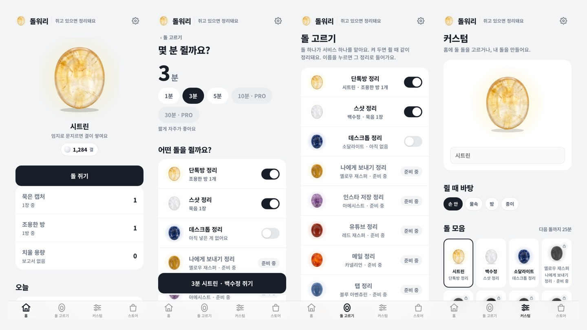

비공개 운영정리 앱 · 먀 자체 운영 · 옛 이름 고요
알림은 못 끄겠고,
정리할 시간은 없었어요.
워리스톤 14개가 스샷 · 단톡방 · 데스크톱 · 인스타 · 유튜브 · 메일 같은 쌓이는 것을 하나씩 맡아요. 돌을 골라 엄지로 문지르는 동안 뒤에서 정리가 돌고, 지우는 건 직접 해요. 내 얼굴을 넣은 커스텀 돌과 실물 워리스톤 스토어가 붙어요.
서비스 소개서 앱 열어보기 ↗
14개돌 · 지금 되는 것 3
0건앱이 지우는 것
v0.9.1지금 판 · 2026-10-16
기기 안서버 없음

돌워리 · 실제 앱 화면 (담긴 항목은 예시 데이터)
왼쪽부터 홈, 돌 고르기, 쥐기예요. 예시 데이터를 넣고 찍은 실제 화면이에요.